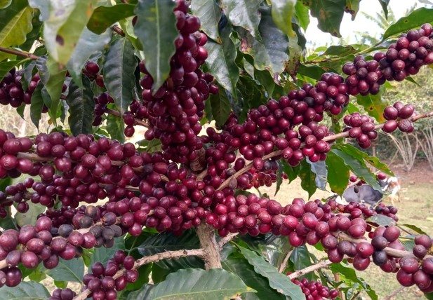
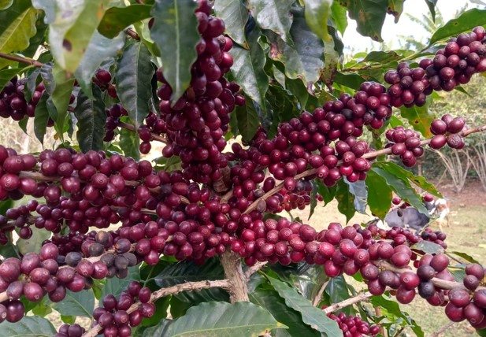

O preparo de nosso café é especial e sua origem fica à mais de mil quilômetros de você. Nossos grãos são colhidos nos sítios de Santa Rita de Minas
 

Após a colheita, o café é degustado e avaliado.
Quando escolhidos, Os grãos são separados à dedo e vão para os pacotes. Onde são vendidos e entregues diretamente em sua residência.